UPI Payment System - Multi-User Scenario Test Report
Distributed System Design project
| Name | Roll no. | GitHub | |
|---|---|---|---|
| Member 1 | Darsh Shah | 26MCE001 | https://github.com/darsh-1010 |
| Member 2 | Shrishti Karn | 26MCE007 | https://github.com/shrishtikarn |
Generated 2026-11-25 15:59:32 · gateway http://127.0.0.1:8080 · random seed 42 · test duration 73 s
1. Executive summary
- 228 different users paid through the public API gateway, each with its own device id (
X-Client-ID), so every user had their own rate-limit bucket exactly like separate phones. - 100 concurrent person-to-person payments settled with a median time to SUCCESS of 0.74 s (p95 1.56 s) on one laptop running 10 containers.
- Across the run: 198 payments SUCCESS, 10 FAILED DECLINED_BY_REMITTER_BANK, 2 FAILED INSUFFICIENT_FUNDS, and 20 requests correctly rejected before any money moved (4 x HTTP 422 AMOUNT_LIMIT_EXCEEDED, 4 x HTTP 422 SAME_PAYER_PAYEE, 4 x HTTP 404 PAYEE_VPA_NOT_FOUND, 4 x HTTP 422 VALIDATION_ERROR, 4 x HTTP 400 MISSING_IDEMPOTENCY_KEY).
- Money was conserved: the total across all 1003 accounts was Rs 1000100000.00 before and Rs 1000100000.00 after.
- Every tracked account's balance changed by exactly the sum of its SUCCESS payments; no balance went negative; no payment was left PENDING; every double tap returned the original transaction (one debit).
- Resilience: with the bank failing 50% of calls the workers made 19 retries and every payment still settled; with the bank down, the worker circuit breakers opened (2 transitions to OPEN), payments waited in the queue, and all of them finished once the bank came back.
- A new Pay Console (
/pay) lets a person choose who pays whom and how much, and shows the payment's journey, both balances before/after, the audit trail and history. Screenshots of every scenario are in section 7.
2. How the system works (architecture)
The project is a containerised model of the backend behind a UPI app (GPay / PhonePe style). It starts with one docker compose up and consists of 10 containers:
| Component | Role | Key techniques |
|---|---|---|
API gateway (gateway) | Only public entry point (port 8080); serves /dashboard and the new /pay | Token-bucket rate limiting (per client + global, atomic Lua in Redis), request inspection, health-aware round robin, per-node circuit breakers, one safe retry |
| Payment service x2 | POST /payments, GET /payments/{id} | Validation, idempotent INSERT (unique Idempotency-Key), XADD to a Redis Stream, answers 202 in milliseconds |
| Account service | VPA lookup, balance, history, dashboard admin reads | Cache-aside in Redis (VPA 5 min, balance 30 s, history 15 s) with explicit invalidation |
| Workers x2 (8 consumers each) | Settle payments asynchronously | Redis Streams consumer group, lease-based claim, retry + exponential backoff + jitter, circuit breaker to the bank, XAUTOCLAIM re-delivery, dead-letter stream |
| Bank mock | Stands in for NPCI + remitter/beneficiary banks | Realistic latency, 1% errors and 0.5% declines in normal mode; chaos modes flaky / slow / down |
| PostgreSQL 16 | Source of truth | Money in BIGINT paise, double-entry ledger, append-only transaction_events audit log, CHECK balance >= 0 |
| Redis 7 | Cache, rate-limit buckets, payment stream | AOF persistence; volatile-lru so the stream is never evicted |
| migrate | One-shot schema + seed | 3 demo users + 1,000 load-test users (Rs 10 lakh each) |

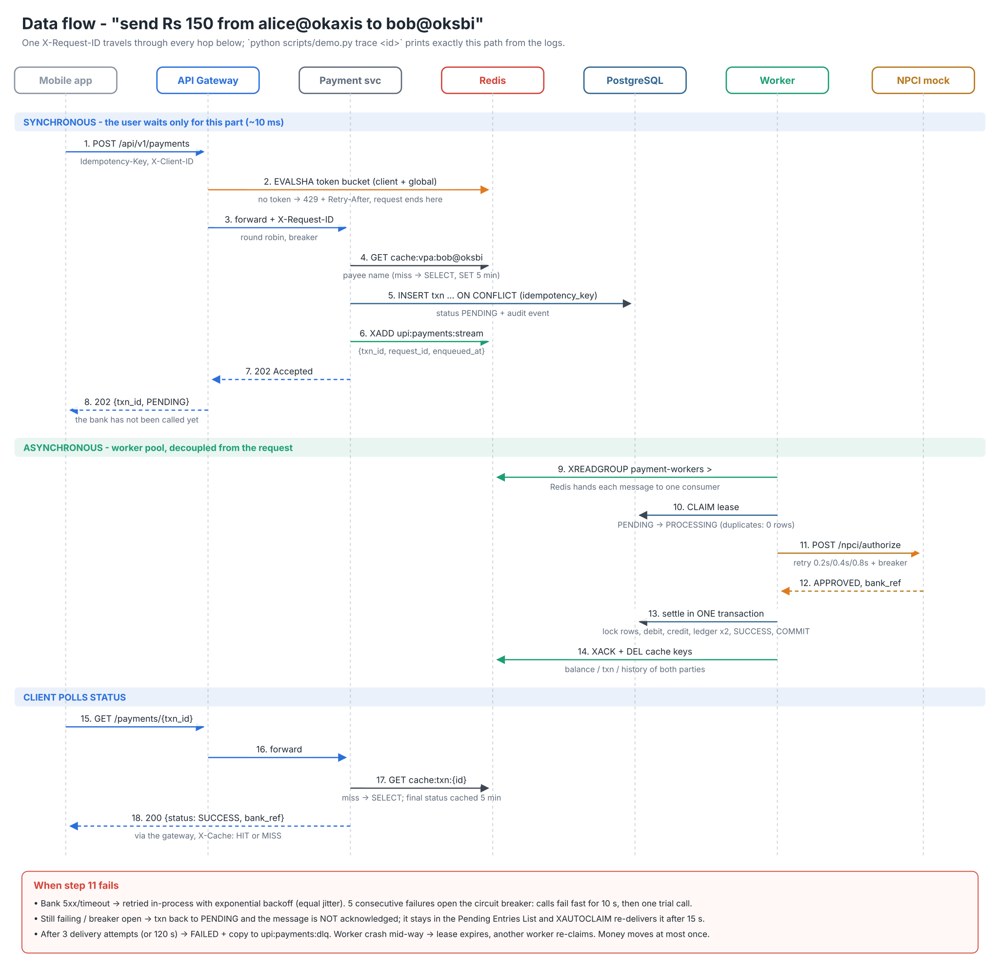
Life of one payment
- The app verifies the payee:
GET /api/v1/vpa/{vpa}returns the registered name (cached). POST /api/v1/paymentswith anIdempotency-Key. The gateway assigns anX-Request-ID, takes a token from the user's write bucket and the global bucket (else 429), inspects the request, and proxies it to a healthy payment node.- The payment service validates (amount <= Rs 1,00,000, payer != payee, both VPAs exist), inserts the transaction as PENDING (a duplicate key returns the original transaction instead), appends it to the Redis Stream and answers 202.
- A worker reads the message, claims the transaction with a lease (PROCESSING), pre-checks the balance and calls the bank switch through the circuit breaker with retries.
- On approval it settles in one Postgres transaction: lock both accounts in a fixed order, re-check balance, debit, credit, two ledger rows, status SUCCESS, audit event. Then
XACKand cache invalidation. - The app polls
GET /api/v1/payments/{id}(cached ~1 s while pending) until SUCCESS / FAILED. - The same request id is logged by every service, copied into the queue message and stored on the row, so one
grepreconstructs the whole path (section 7.3).
3. How this maps to real UPI (research)
Web research on NPCI rules and published UPI behaviour was used to choose the test scenarios and their expected outcomes. Where sources disagree this is noted; NPCI's own circulars are the authority.
| Real UPI behaviour | What the sources say | How this project models it / what we tested |
|---|---|---|
| P2P amount limit | The general P2P cap stayed at Rs 1 lakh after NPCI's Sept-2025 changes; higher Rs 5-10 lakh caps apply only to specific merchant (P2M) categories. Banks may set lower limits. | MAX_AMOUNT_RUPEES=100000 in the payment service -> 422 AMOUNT_LIMIT_EXCEEDED (scenario *Amount above Rs 1 lakh*). |
| Business declines vs technical failures | Error codes separate customer/bank declines (e.g. Z9 insufficient funds, U30 debit failure at remitter, U16 risk/limit) from technical timeouts (e.g. U67 debit timeout). Meanings of U30/U16 vary between apps. | Bank mock returns DECLINED (-> FAILED DECLINED_BY_REMITTER_BANK, no retry) vs HTTP 503 (-> retry with backoff). Insufficient funds -> FAILED INSUFFICIENT_FUNDS. |
| Timeouts / 'deemed approved' | PSPs must check status only after a timeout using the check-transaction API; NPCI requires credit or auto-reversal by T+1 with compensation for delays. | A payment never stays in limbo: deferred payments are re-delivered; after 3 deliveries -> FAILED BANK_UNAVAILABLE; after 120 s -> FAILED TIMEOUT. The *nothing stuck* check verifies this. |
| API rate limits | NPCI's 2025 API circular limits high-volume APIs, e.g. 50 balance enquiries per app per customer per day, and asks PSPs to queue and rate-limit system-initiated calls, especially in peak hours. | Per-client token buckets (read 40 burst / 20 s^-1, write 10 / 2 s^-1) plus a global bucket -> 429 + Retry-After (scenario *Rate limit*). |
| Idempotency / duplicate debits | Debit reversals and duplicate-debit complaints are a major NPCI concern (debit-reversal / deemed-approval circulars). | Unique Idempotency-Key in the DB + lease-based claim: a double tap returns the same transaction (scenario *Double tap*). |
| Status checks | Excessive check-status calls by PSPs stressed the network; NPCI tightened supervision. | Status polling is served from Redis (1 s TTL while pending, 5 min once final). |
Simplifications (from the project README): a single mock service stands in for NPCI and both banks, balances live in our own Postgres, and there is no UPI PIN, authentication or TLS.
4. What was added for this test
| File | Purpose |
|---|---|
gateway/static/pay.html (served at /pay) | Pay Console - a separate interface where a person picks the payer, the payee and the amount, verifies the payee's name, and pays. It shows the 4-step journey, HTTP/trace details, balances before & after, the audit trail and the payer's history, plus one-click scenarios. |
gateway/main.py | New routes GET /pay and GET /dashboard/api/users (people picker). |
account_service/main.py, sql.py | New internal GET /admin/users (VPA, name, bank, balance). |
scripts/multi_user_test.py | Stdlib-only scenario test: 100+ distinct users, 17 scenario types, chaos phases, consistency verification; writes results.json, transactions.csv, console.log. |
scripts/capture_report_assets.py | Runs the test while a headless browser (Playwright + installed Edge) screenshots the dashboard at each phase, drives the Pay Console through every scenario, and renders logs from docker compose logs as screenshots. |
scripts/make_multi_user_report.py | Builds this report (Markdown, HTML, PDF) from the run's own data. |
5. Test design
Each phase uses its own block of seeded users (user0001@mockbank ... ) so phases cannot interfere, and each user sends with X-Client-ID: phone-<vpa>. The P2P phase runs 100 users with 25 in parallel; payees are chosen with a fixed random seed so runs are reproducible.
| Scenario | Expected outcome | Why it matters |
|---|---|---|
| P2P transfer | 202 Accepted, then SUCCESS | The everyday flow: one person pays another; tests the whole async pipeline under concurrent load. |
| P2M merchant payment | 202, then SUCCESS | Person-to-merchant (scan-and-pay at a shop). |
| Concurrent payments to one payee | all SUCCESS, exact total credited | Many payers credit the same account at once - row-lock contention, no lost update. |
| Concurrent overspend | exactly 2 SUCCESS + 1 INSUFFICIENT_FUNDS | Three simultaneous debits that together exceed the balance - the balance is re-checked under a row lock, so it can never go negative. |
| Double tap (idempotent replay) | 202, then 200 Idempotent-Replay with the same txn_id | A user taps Pay twice / the app retries after a network drop - must debit once. |
| Idempotency key reused | 409 IDEMPOTENCY_KEY_REUSED | A key reused for a *different* payment is a client bug and is refused. |
| Bank decline | 202, then FAILED DECLINED_BY_REMITTER_BANK | The issuer bank declines (business decline, like NPCI U30): stored, audited, no money moves, no retry. |
| Insufficient funds | 202, then FAILED INSUFFICIENT_FUNDS | Payer cannot afford it (NPCI Z9). |
| Amount above Rs 1 lakh | 422 AMOUNT_LIMIT_EXCEEDED | NPCI's Rs 1,00,000 P2P cap; rejected before anything is stored. |
| Pay yourself | 422 SAME_PAYER_PAYEE | Payer and payee must differ (also a DB CHECK constraint). |
| Unknown payee | 404 PAYEE_VPA_NOT_FOUND | Typo in a VPA - caught by payee verification. |
| Malformed VPA | 422 validation error | Not of the form handle@psp. |
| Missing Idempotency-Key | 400 MISSING_IDEMPOTENCY_KEY at the gateway | Gateway request inspection; the request never reaches a service. |
| Rate limit (one user floods 30 requests) | ~10 x 202 then 429 + Retry-After; bystander unaffected | Per-client token bucket (write: burst 10, 2/s). |
| Bank flaky (50% errors) | SUCCESS (after retries) | Retry with exponential backoff + jitter hides transient switch errors. |
| Bank down, then recovers | no money lost; SUCCESS after recovery (or FAILED BANK_UNAVAILABLE after 3 deliveries) | Circuit breaker opens, payments wait in the stream, XAUTOCLAIM re-delivers after recovery. |
Consistency checks after the run
- Total money in all accounts is unchanged (payments only move money).
- For every tracked account (all test users + Alice, Bob, Chai Point): balance after - balance before = credits - debits of its SUCCESS payments, computed independently by the test.
- No negative balance anywhere.
- No transaction left PENDING or PROCESSING.
- Every double tap returned HTTP 200
Idempotent-Replaywith the originaltxn_id.
6. Results
| Scenario | Requests | As expected | Outcomes | Settle p50 / p95 (s) | Notes |
|---|---|---|---|---|---|
| P2P transfer | 100 | 100/100 | SUCCESS x100 | 0.74 / 1.56 | 27.2 payments/s end-to-end |
| P2M merchant payment | 30 | 30/30 | SUCCESS x30 | 0.81 / 1.03 | |
| Concurrent payments to one payee | 20 | 20/20 | SUCCESS x20 | 0.68 / 0.78 | |
| Concurrent overspend | 3 | 3/3 | SUCCESS x2, FAILED x1 | 0.38 / 0.38 | 2 SUCCESS / 1 INSUFFICIENT_FUNDS |
| Double tap (idempotent replay) | 10 | 10/10 | SUCCESS x10 | 0.37 / 0.38 | |
| Idempotency key reused | 5 | 5/5 | SUCCESS x5 | 0.48 / 0.49 | |
| Bank decline | 10 | 10/10 | FAILED x10 | - | |
| Insufficient funds | 1 | 1/1 | FAILED x1 | - | |
| Amount above Rs 1 lakh | 4 | 4/4 | HTTP 422 AMOUNT_LIMIT_EXCEEDED x4 | - | |
| Pay yourself | 4 | 4/4 | HTTP 422 SAME_PAYER_PAYEE x4 | - | |
| Unknown payee | 4 | 4/4 | HTTP 404 PAYEE_VPA_NOT_FOUND x4 | - | |
| Malformed VPA | 4 | 4/4 | HTTP 422 VALIDATION_ERROR x4 | - | |
| Missing Idempotency-Key | 4 | 4/4 | HTTP 400 MISSING_IDEMPOTENCY_KEY x4 | - | |
| Rate limit (one user floods 30 requests) | 30 | 30/30 | HTTP 429 x20, HTTP 202 x10 | - | bystander payment SUCCESS |
| Bank flaky (50% errors) | 20 | 20/20 | SUCCESS x20 | 0.47 / 21.69 | 19 bank retries |
| Bank down, then recovers | 10 | 10/10 | SUCCESS x10 | 33.85 / 33.88 | breaker opened 2x |
Consistency checks
| Check | Result | Detail |
|---|---|---|
| Total money in the system unchanged | PASS | Rs 1000100000.00 -> Rs 1000100000.00 |
| Every one of 233 tracked accounts moved by exactly its SUCCESS payments | PASS | all match |
| No negative balances | PASS | 0 negative |
| No payment left PENDING/PROCESSING | PASS | 0 stuck |
| Every double tap returned the original transaction (one debit) | PASS | 10 double taps |
System counters during the run (from /stats)
| Counter | Value |
|---|---|
| Payments settled SUCCESS (all workers; includes the flood requests that got through the limiter) | 208 |
| Payments FAILED (all reasons) | 12 |
| Bank retries (exponential backoff) | 34 |
| Payments deferred back to the queue | 21 |
| Circuit breaker transitions to OPEN | 2 |
| Requests rejected with 429 by the gateway | 20 |
| Idempotent replays served | 10 |
| Dead-lettered messages | 0 |
Observations
- Random bank declines are expected. In normal mode the bank mock declines 0.5% of payments and fails 1% of calls, like a real issuer; the test reports such declines separately instead of treating them as bugs. Transient 1% errors are absorbed by retries and are invisible to users.
- Recovery time after an outage is dominated by configuration, not load: a deferred payment is re-delivered only after
RECLAIM_IDLE_MS= 15 s and the breaker waitsCB_RESET_TIMEOUT_S= 10 s before a trial call, so payments made while the bank was down finished about 33.85 s after they were sent. Lowering these values shortens recovery at the cost of more load on a sick bank. - In the flaky phase most payments settle in well under a second; the slow tail (p95) is the few payments whose 3 in-process retries all failed and which were re-delivered 15 s later by XAUTOCLAIM.
- Concurrent debits of one account are serialised by row locks: the overspend scenario produced exactly two successes and one INSUFFICIENT_FUNDS - the balance check under the lock prevents double spending.
- The per-client limiter isolates users: while one user's flood received 429s, another user's payment went through normally.
7. Screenshots
7.0 Cluster
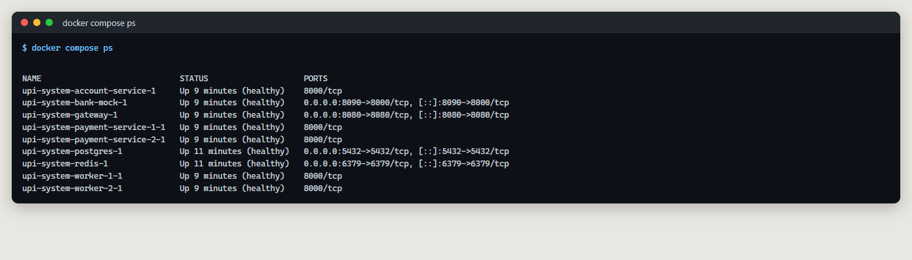
7.1 Live system dashboard (/dashboard) during the test
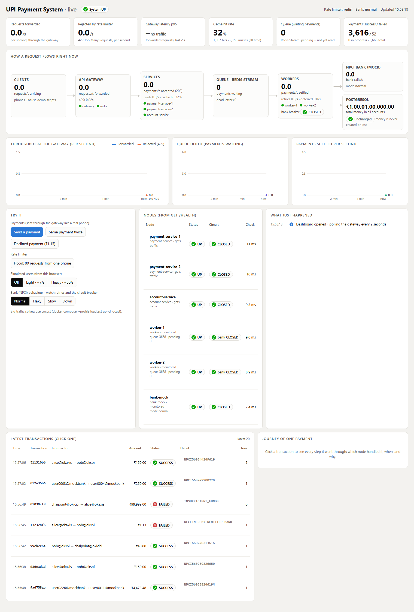
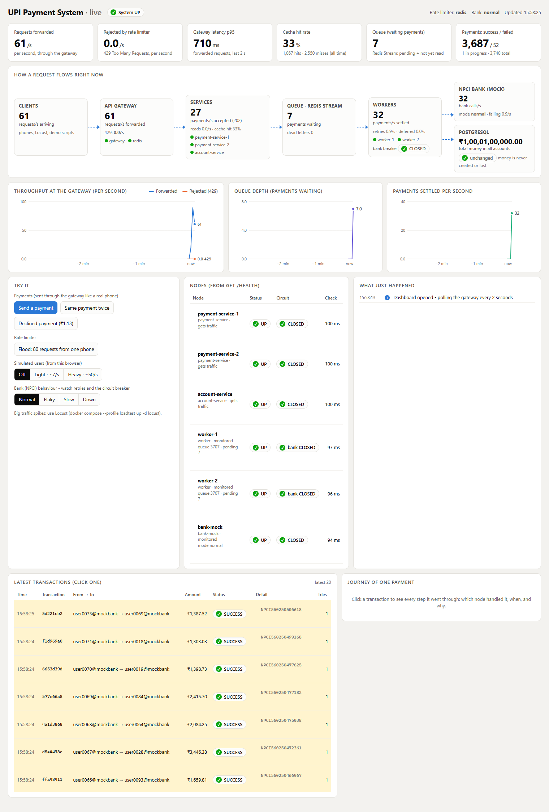
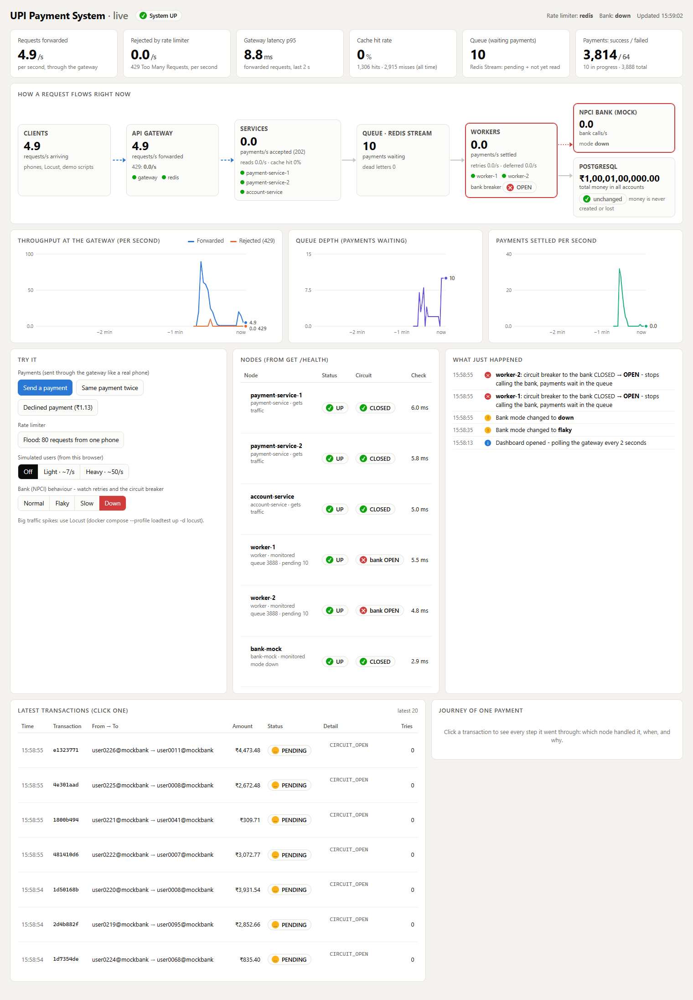

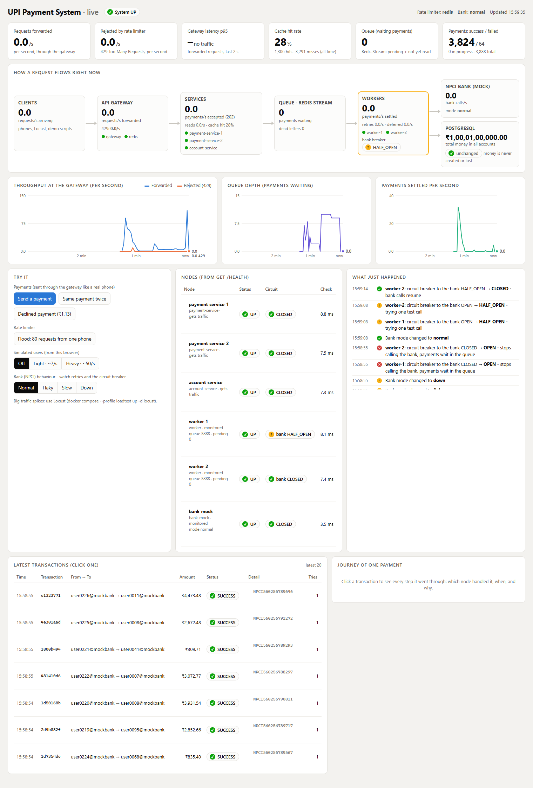
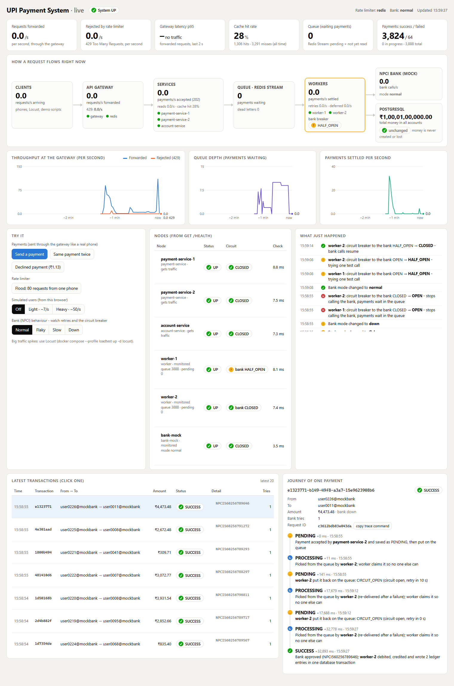
7.2 Pay Console (/pay) - person-to-person payment scenarios


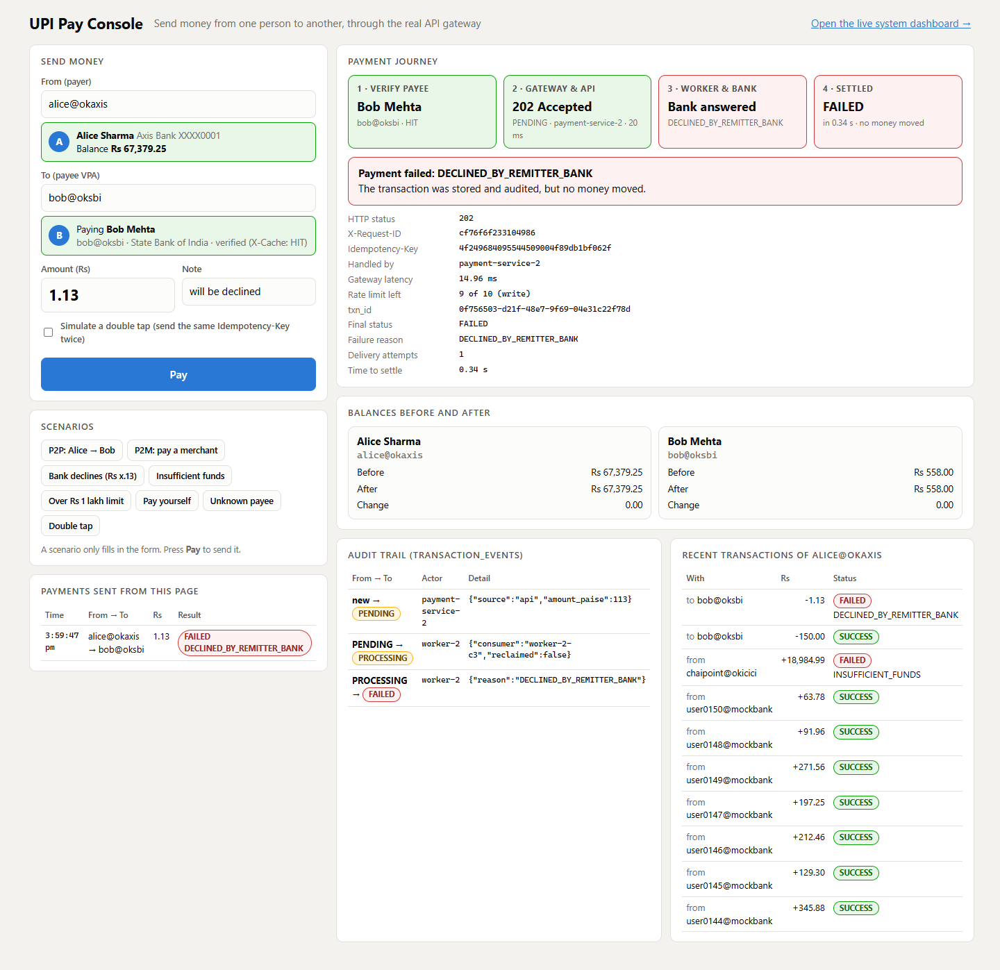
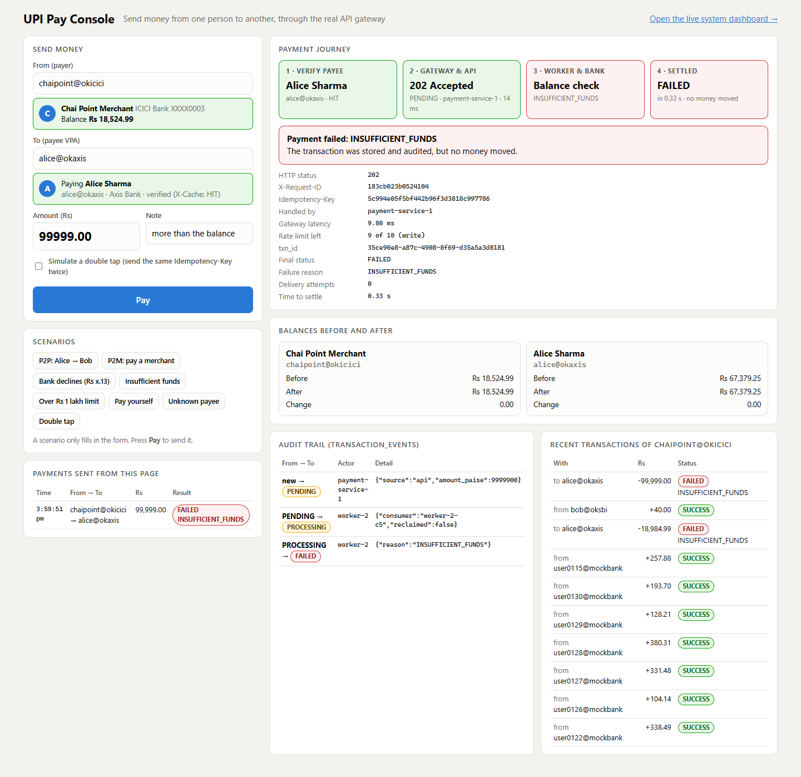

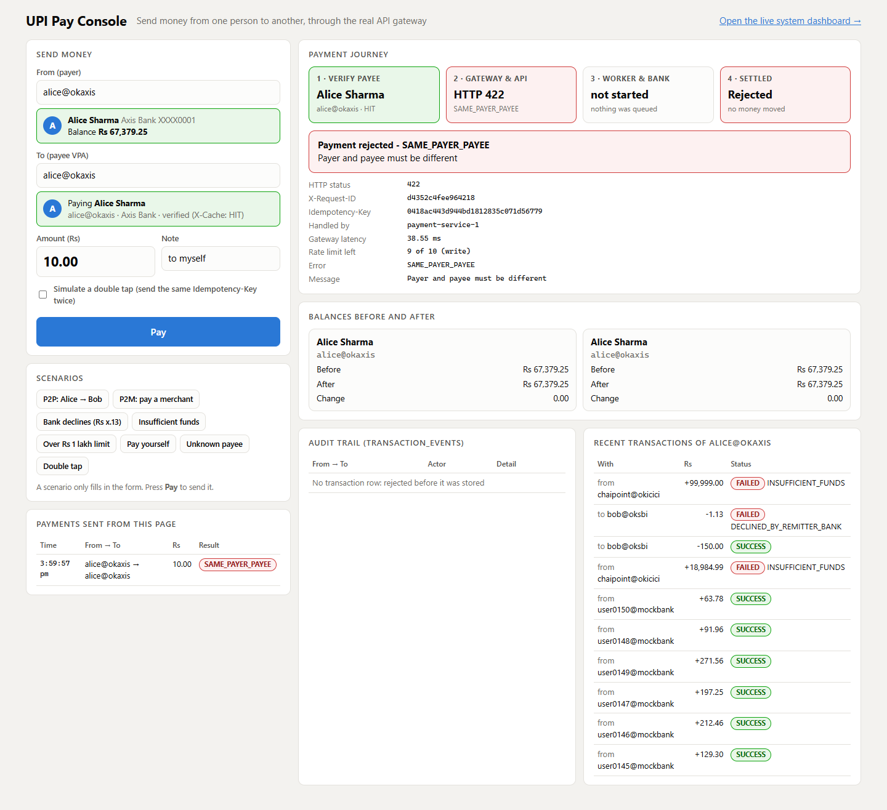
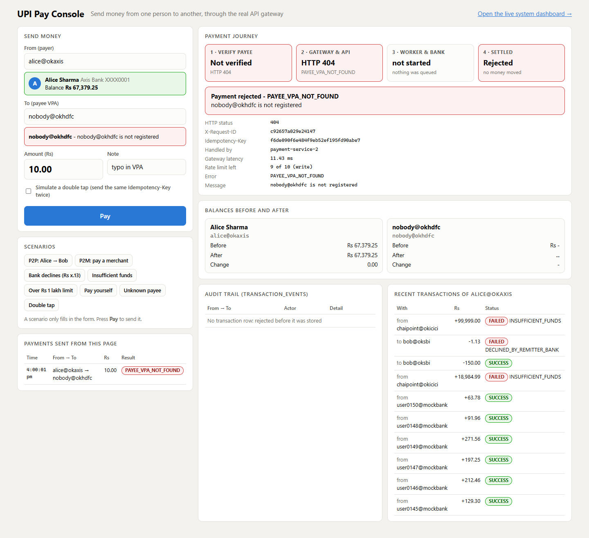


7.3 Logs - structured JSON logs traced by request id
Each table below is built from docker compose logs filtered by one request_id; it shows the same request passing gateway -> payment service -> Redis Stream -> worker -> bank -> Postgres.
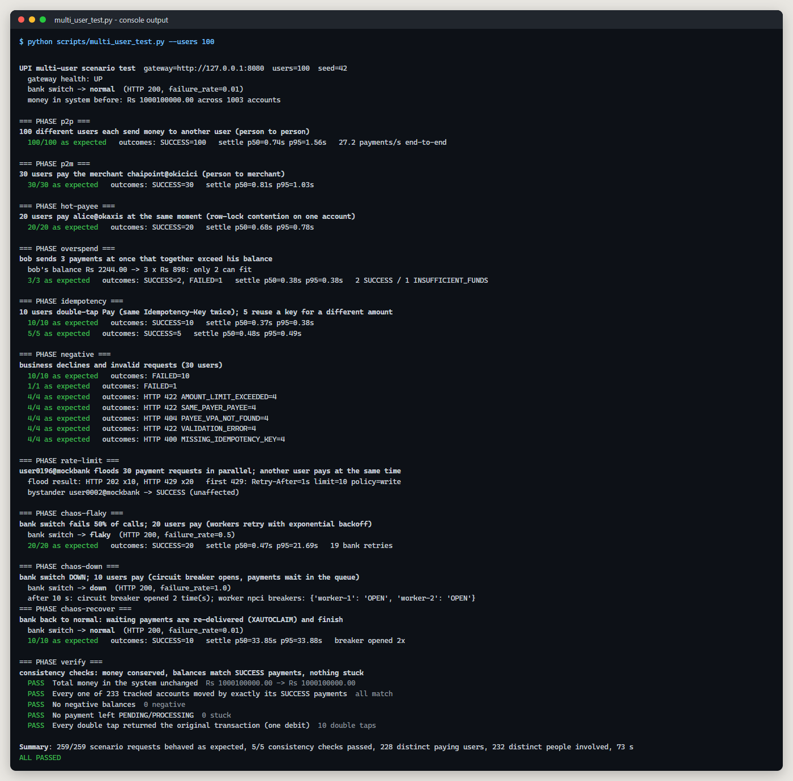

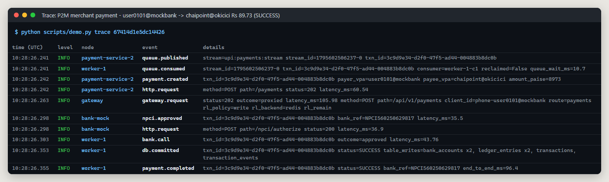

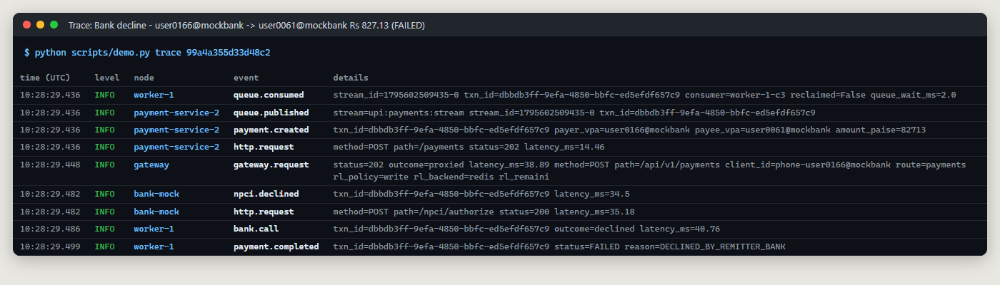
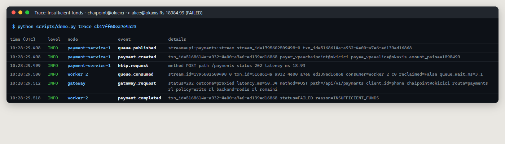


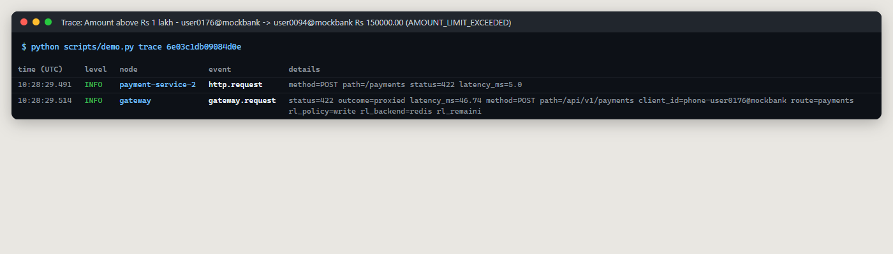
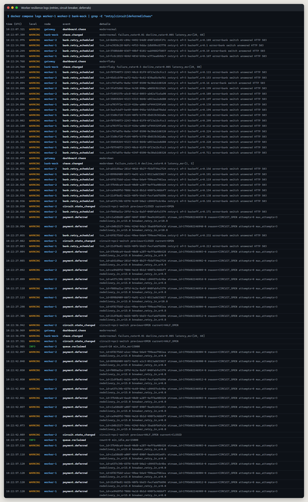


8. How to reproduce
docker compose up --build -d python scripts/smoke_test.py # 11 end-to-end checks python scripts/multi_user_test.py # 100+ users, all scenarios (~75 s) pip install playwright # uses the installed Edge/Chrome python scripts/capture_report_assets.py # test + screenshots (~4 min) python scripts/make_multi_user_report.py # this report (md, html, pdf) # interactive: http://127.0.0.1:8080/pay and http://127.0.0.1:8080/dashboard
Raw data of this run: reports/multi_user_test/results.json, transactions.csv (one row per scenario request with txn_id, request_id, node, timings) and console.log.
9. Limitations
- All containers share one laptop's CPU, so absolute latencies are relative, not production numbers.
- The bank is a single mock; there is no real NPCI message format (ReqPay/RespPay), UPI PIN, device binding or TLS.
- Users are pre-seeded accounts; there is no registration/login flow to test.
- Web sources on limits and error codes are news/bank summaries where the NPCI circular itself was not available; they are listed below and should be checked against NPCI before being quoted as rules.
10. Sources
- NPCI - Harmonisation of TAT and customer compensation for failed transactions (IMPS/UPI OC 93, 2019) - https://www.npci.org.in/PDF/npci/imps/circular/2019/IMPS-UPI-I-OC-93-I-FY-19-20-I-Harmonisation-of-Turn-Around-Time(TAT)-and-customer-compensation-for-failed-transaction.pdf
- NPCI - UPI Circular 17: Debit reversals and deemed approval - https://www.npci.org.in/PDF/npci/upi/circular/2017/Circular-17-Debit-Reversals-and-Deemed-Approval_0.pdf
- NPCI - UPI OC 45: Solutions to reduce deemed approved transactions - https://www.npci.org.in/PDF/npci/upi/circular/2018/UPI OC 45 - Solutions to reduce deemed approved transaction.pdf
- NPCI - OC 149-A: Reduction of business declines in UPI - https://www.npci.org.in/PDF/npci/upi/circular/2022/OC149-A-Addendum-to-OC-149-Reduction-of-business-declines-in-UPI.pdf
- Oracle - India Unified Payments Interface (UPI) switch documentation - https://docs.oracle.com/cd/G15796_01/RHTML/India_UPI/Responsive%20HTML5/UPI/UPI/UPI.htm
- Business Today - NPCI to increase UPI limits for high-value payments from Sept 15 (2025) - https://www.businesstoday.in/personal-finance/banking/story/npci-to-increase-upi-transaction-limits-for-high-value-payments-from-sept-15-check-updated-limits-493278-2025-09-09
- Paytm Blog - UPI limits get a big boost from 15 Sept (2025) - https://paytm.com/blog/news/upi-higher-transaction-limits-sep-2025
- Razorpay Blog - UPI transaction limit per day - https://razorpay.com/blog/upi-transaction-limit-per-day/
- Business Standard - NPCI tightens UPI API supervision to curb network stress (2025) - https://www.business-standard.com/finance/news/npci-tightens-upi-api-supervision-to-curb-network-stress-125052201406_1.html
- Digit - NPCI's new UPI API rules from August 1 (balance-check limits) - https://www.digit.in/news/general/upi-alert-npcis-new-rules-kick-in-from-august-1-heres-what-changes.html
- Legal500 - NPCI guidelines on UPI and API usage - https://www.legal500.com/intelligence/india/technology/npci-guidelines-on-upi-and-api-usage
- Zerodha Support - Failed UPI transaction error codes - https://support.zerodha.com/category/funds/adding-funds/articles/failed-upi-transaction
- PhonePe Developer - Payment gateway error codes - https://developer.phonepe.com/payment-gateway/error-codes
- Paytm Blog - What is error code U30 in UPI? - https://paytm.com/blog/payments/upi/what-is-error-code-u30-in-upi/
- Paytm Blog - Bank responsibility for failed UPI transactions - https://paytm.com/blog/payments/upi/bank-responsibility-for-failed-upi-transaction
- Razorpay Blog - Deemed success in IMPS/UPI payouts - https://razorpay.com/blog/payout-processing-imps-upi-transactions-deemed-success-npci/